Principe
La Console de Supervision permet de programmer l'envoi de mails destinés à alerter les administrateurs chargés du parc d'impression en cas de dysfonctionnements des serveurs, files d'impression et niveaux critiques des consommables.
Cette fonction nécessite un serveur SMTP (dédié ou le serveur SMTP de Watchdoc®) qu'il convient de configurer.
Avant de configurer, veillez à rassembler les données relatives au serveur SMTP sollicité.
Accéder à l'interface de supervision
-
Depuis le Menu principal de WSC, cliquez sur bouton Configuration avancée ;
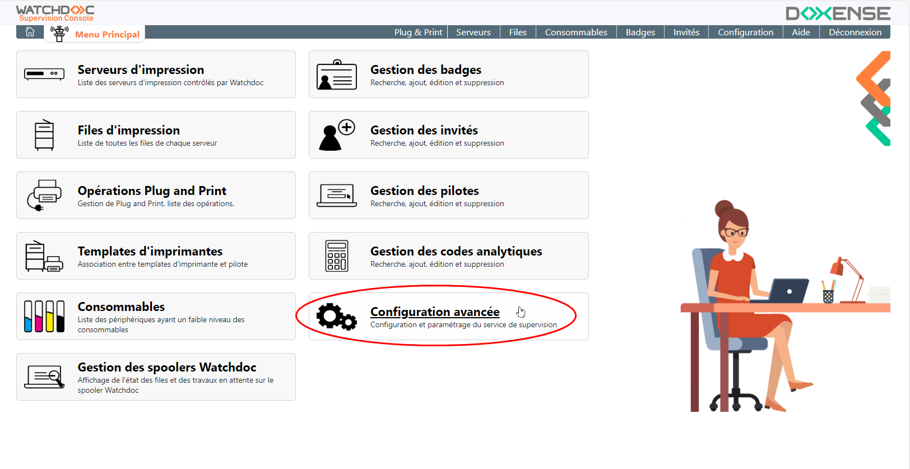
-
Dans l'interface Configuration avancée, cliquez sur Envois de mails :
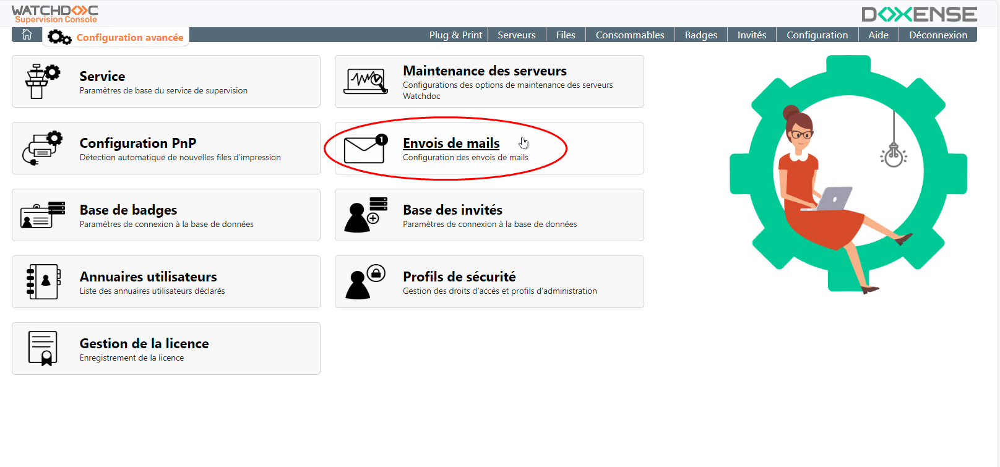
-
vous accédez à l'interface Envoi de mails dans laquelle vous pouvez configurer le serveur SMTP ainsi que les alertes et rapports :
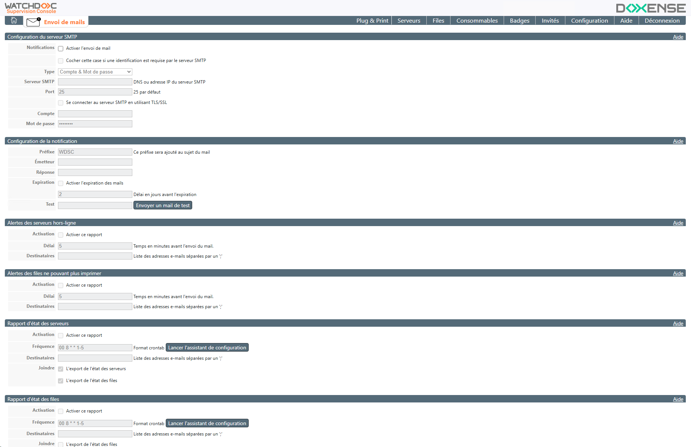
Configurer le serveur SMTP
Dans cette section, paramétrez le serveur SMTP sur lequel repose la fonction d'envoi de mails :
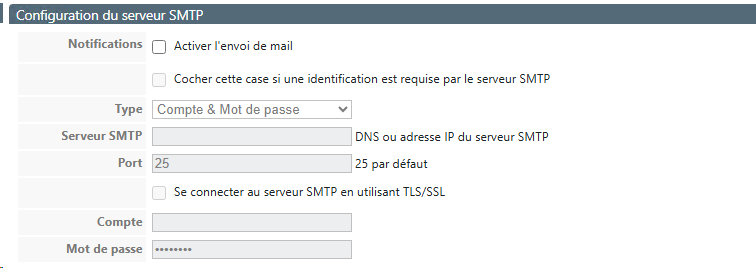
-
Import : si vous souhaitez exploiter le serveur SMTP utilisé par Watchdoc®, cliquez sur le bouton pour en importer la configuration ;
-
Notifications : cochez la case pour activer globalement la fonction d'envoi de mail ;
-
Serveur SMTP : indiquez dans ce champ le nom DNS ou l'adresse IP du serveur SMTP ;
-
Port : indiquez dans ce champ le port d'accès au serveur SMTP ou conservez le port par défaut (25) ;
-
Se connecter au serveur SMTP en utilisant TLS/SSL : cochez cette case si la connexion au serveur SMTP est sécurisée ;
-
Identification requise : cochez cette case si une identification est requise par le serveur SMTP, puis complétez les champs suivants :
-
Compte : indiquez le compte d'administration habilité à se connecter au serveur SMTP ;
-
Mot de passe : indiquez le mot de passe associé au compte habilité à se connecter au serveur SMTP ;
Configurer la notification
Dans cette section, paramétrez la notification :
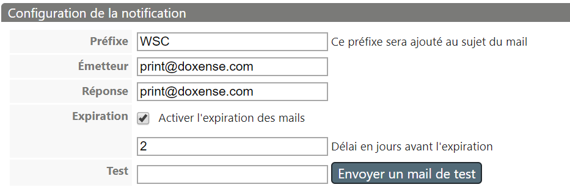
-
Préfixe :saisissez dans ce champ le préfixe figurant dans l'objet du mail, permettant d'identifier rapidement les source et nature du message et de trier les messages ;
-
Emetteur : indiquez dans ce champ l'adresse mail utilisée par le service pour envoyer les notifications ;
-
Réponse : indiquez dans ce champ l'adresse mail à laquelle peuvent être envoyées les réponses à la notification ;
-
Expiration : cochez cette case pour activer un délai d'expiration dans le cas où les mails n'auraient pu être envoyés. Dans le champ suivant, indiquez la durée, en jours, de ce délai d'expiration :
-
Test : saisissez dans ce champ l'adresse mail du destinataire auquel vous adressez le test, puis cliquez sur le bouton
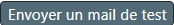
.
Envoi des alertes
Présentation des alertes
L'alerte est un message envoyé automatiquement en cas de dysfonctionnement des serveurs ou des files d'impression à un ou plusieurs destinataires prédéfinis dans deux cas précis de dysfonctionnements :
-
un serveur d'impression ne répond pas (hors-ligne) ;
-
une file d'impression n'imprime plus.
Configuration de l'envoi
Pour configurer les alertes, remplissez les champs suivants :
-
Activation : cochez cette case pour activer ce type d'alerte ;
-
Délai : indiquez, en minutes, le délai entre le début de la panne et l'envoi du mail ;
-
Destinataires : saisissez dans ce champ les adresses mail des destinataires de l'alerte, séparées par un point-virgule.
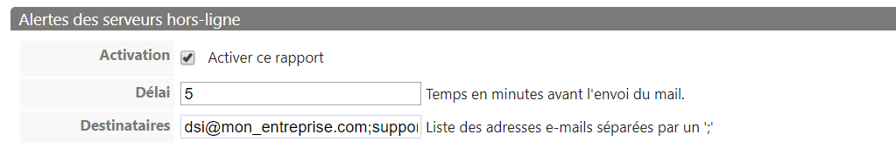
Envoi des rapports
Présentation des rapports
Les rapports sont des relevés réguliers résumant l'état des éléments de votre parc d'impression, selon une fréquence prédéfinie :
-
rapport d'état des serveurs : mail récapitulant l'état des serveurs ;
-
rapport d'état des files : mail récapitulant l'état des files
-
rapport d'état des consommables : mail récapitulant l'état des consommables du parc ;
-
rapport de l'audit des badges : mail récapitulant les différentes actions prises lors de l'audit des badges (suppression, fusion, réattribution, etc..) ;
-
rapport d'utilisation des licences WES : mail récapitulant l'utilisation qui est faite des WES sur les différents périphériques du parc.
Configuration de l'envoi
L'activation et la configuration est la même (à quelques détails près) pour les différents rapports :
-
Activation : cochez cette case pour activer ce type de rapport ;
-
Fréquence : indiquez, en respectant le format "cron", la fréquence à laquelle vous souhaitez exécuter l'envoi du rapport. Cliquez sur le bouton Lancez l'assistant de configuration pour compléter le champ si vous ne connaissez pas la syntaxe du format "cron" ;
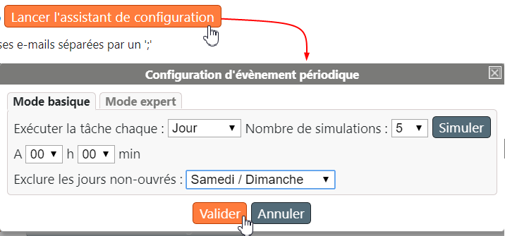
-
Destinataires : saisissez dans ce champ les adresses mail des destinataires de l'alerte, séparées par un point-virgule.
-
Joindre :
-
l'export de l'état des serveurs : cochez cette case pour obtenir en pièce jointe le fichier (au format .csv) détaillant l'état de l'élément supervisé ;
-
l'export de l'état des files : (spécifique au rapport des serveurs).
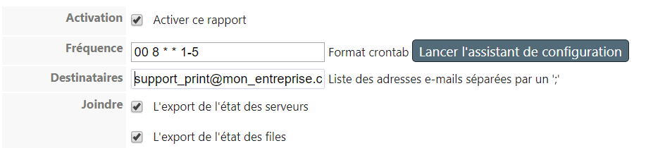
-
Rapport d'utilisation des licences WES
L'activation et la configuration sont les mêmes que pour les autres rapports.
Seule diffère la case à cocher suivante :
-
Transfert : cochez cette case pour que le rapport relatif aux licences WES de votre parc soient également transmis à Doxense® via l'adresse contact@doxense.com.
Pour modifier l'adresse de destination, il convient de modifier la balise <other/contact-mail> dans le fichier de configuration de Watchdoc Supervision Consol (wts_config.xml). Si la balise <contact-mail> n'existe pas, créez-la sous la balise <other>.
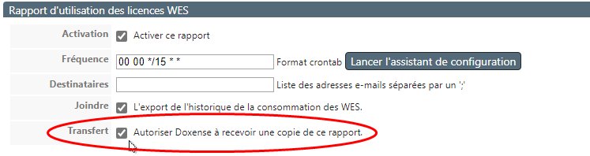
A la fréquence fixée, le destinaire reçoit le rapport d'utilisation des licences Watchdoc :
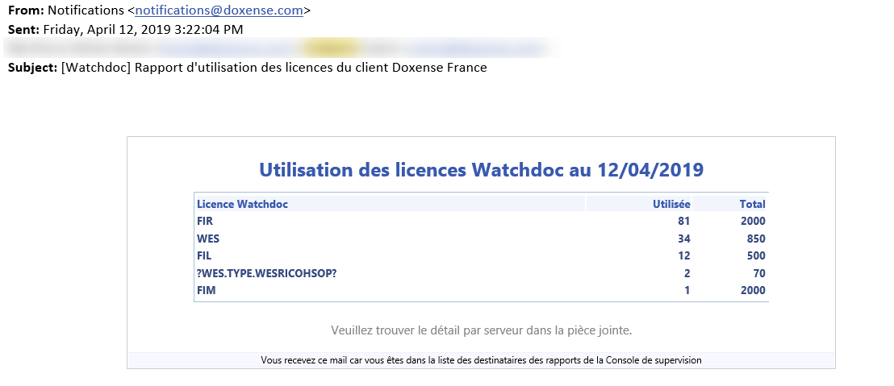